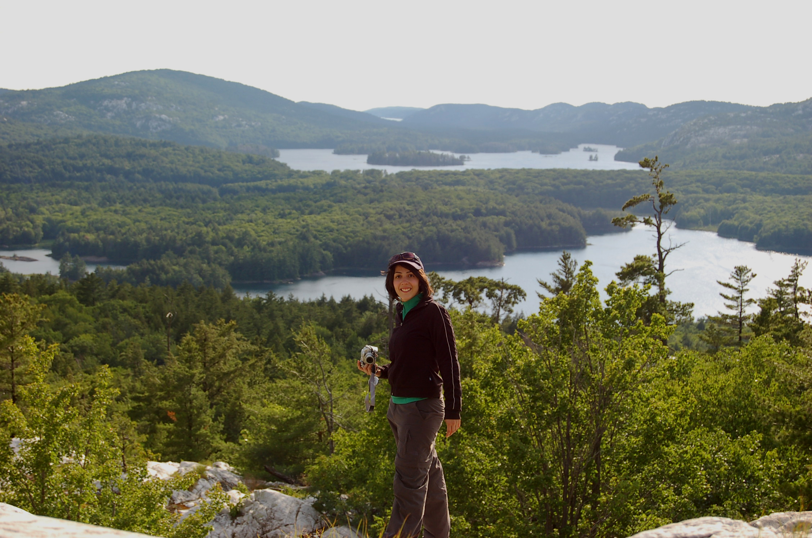

Arezou Keshavarz
About me ...
I am a first year Masters student at the department of Electrical Engineering at Stanford University. I received my Bachelor of Applied Science degree from the University of Toronto.
Here is my resume for general information and my CV for a bit more detailed explanation of what has kept me busy so far.
Affliations:
Wireless Sensor Networks Laboratory (WSNL)
Artificial Perception Laboratory (APL)
Publications
- Aarabi, P., Lam, J., Keshavarz, A., Face Detection using Information Fusion, International Conference on Information Fusion (Fusion 2007), July 9-12, Quebec City, Canada, 2007. (to appear)
- Keshavarz, A., Aarabi, P., Sound Localization-based Navigational User Interfaces, IEEE International Symposium on Multimedia (ISM06), December 11-13, San Diego, United States, 2006. pdf
- Keshavarz, A., Maleki Tabar, A., Aghajan, H., Distributed Vision-Based Reasoning for Smart Home Care, Workshop on Distributed Smart Cameras (DSC06) October 31, United States, 2006. pdf
- Maleki Tabar, A., Keshavarz, A., Aghajan, H., Smart Home Care Network using Sensor Fusion and Distributed Vision-based Reasoning, 4th International Workshop on Video Surveillance and Sensor Networks (VSSN06), October 22-28, Santa Barbara, United States, 2006. pdf
Scholarships & Awards
- Adel S. Sedra Outstanding Student Award (Years 2004, 2005 and 2006)
- NSERC summer student research award (Summer 2005 and 2006)
- Wallberg Undergraduate Scholarship (2006)
- Two-times winner of the University of Toronto Scholar Award (2004 and 2005)
- IEEE Student Branch Vice Chair for Professional Development (2006-2007)
- Member of the Golden Key International Honour Society (Since 2004)
Contact Info
E-mail: arezou@stanford.edu
Photoblog
Take a look at the world through the eye of the beholder.
Copyright © 2007 - Arezou Keshavarz